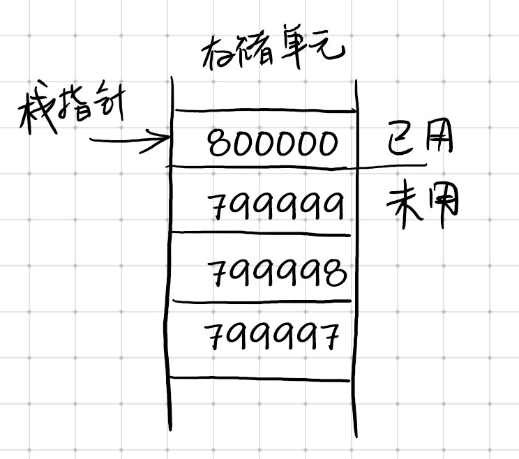
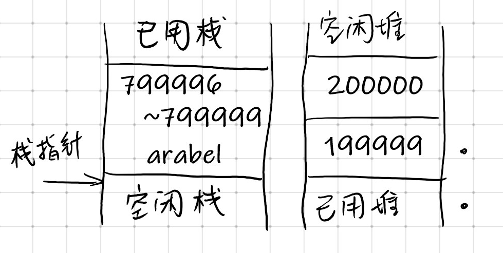
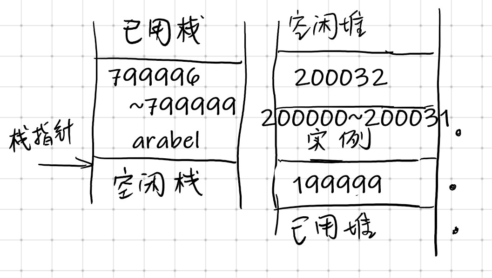
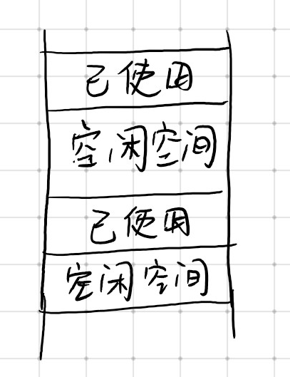

0x00 〇
这是我一直下意识回避去理解的问题，从学单片机微机的时候就似懂非懂的。今天是看到别人的文章，特别好，看了一遍觉得自己也理解了不少，但我感觉是出自某本我不知道的书中，不管了，来总结一下。
0x01 值类型
在进程的虚拟内存中，有一个区域被称作堆栈，用来存储值类型数据，除此之外，在调用方法时，也是通过堆栈来存储传递给方法的参数副本。想要理解堆栈的工作原理，首先要理解的是 C# 中变量的作用域。
1 | {// block 1 |
这段代码中，顺序上，首先声明了变量 a，在后面的代码块（block 2）中声明了变量 b，当 block 2 代码块终止时，变量 b 便离开了作用域，然后外层的 block 1 代码块终止，a 也离开了作用域。所以 b 是完全处在 a 的生命周期之内的。即，释放变量的顺序总是与给它们分配内存时的顺序相反，这便是“栈”的工作方式。
我们在使用 C# 写一段程序的时候，并不需要了解堆栈的地址空间在哪里。这些是由堆栈指针标识的，它指向堆栈中下一个可用空间的地址。程序刚开始运行时，堆栈指针会指向堆栈内存空间的尾部，一般来说，堆栈是向下生长的，因此数据是从高内存地址向低内存地址填充的。当数据进入堆栈后，堆栈指针就会向低地址移动，指向下一个自由空间。

接下来的代码中，会告诉编译器，需要一些存储单元，保存一个整数和一个双精度浮点数，这些存储单元会分别分配给 nRacingCars 和 engineSize，声明每个变量的代码表示开始请求访问这个变量，花括号则指定了这两个变量的作用域。
1 | { |
如果使用上图所表示的堆栈，变量 nRacingCars 进入作用域，被赋值为 10，这个值会存放在单元 799996~799999 上，也就是堆栈指针所指的位置向下 4 个字节的空间，因为整型数需要 4 个字节来保存。接下来，代码声明了变量 engineSize，是一个 double 类型的数据，需要占用 8 个字节，对应的是 799988~799995 地址的存储空间，e堆栈指针减去 8 依然指在下一个自由空间。
当变量离开作用域时，我们就不再需要这个变量了。根据上面所说，我们知道变量的生命周期是对称的（嵌套的？），比如当 engineSize 在作用域内时，无论发生什么，在堆栈中堆栈指针总是指向存储 engineSize 的空间的。为了从堆栈中删除它，只需要给堆栈指针加 8 就可以了。此时曾保存过 engineSize 变量值的位置，又变成了自由空间。当有新的变量存入时，就会将这些曾经属于 engineSize 的值覆盖。
特殊的，如果编译器遇到一行代码中声明多个变量的情况，他们入栈的顺序就是不确定的，但是依然符合我们上面说的规律，只是作为同时进入作用域，同时离开作用域，谁先谁后其实并不重要。
0x02 引用类型
堆栈的性能非常高，但是灵活性有限。在堆栈中，后声明的变量一定先回收，也就是这些变量的生命周期是嵌套的。这在使用中会造成很多不变，因此我们希望可以自己分配一些固定的内存，在未来较长一段时间内，都可以自由地使用。
这便是使用 new 运算符来请求存储空间。
此时，使用的内存就是托管堆，我们所说的引用类型的数据都会保存在这里。
c# 中的托管堆与 c++ 中的堆不同，托管堆在垃圾收集器的控制下工作，因此有显著的性能优势。
托管堆是进程可以使用的 4GB 空间中的另一个内存区域。接下来通过代码来了解托管堆的工作原理以及如何为引用类型分配内存。
1 | void DoWork() |
这段代码中，我们假定 Customer 与 EnhancedCustomer 是两个类，EnhancedCustomer 类扩展了 Customer 类。这段代码中，首先声明了一个 Customer 对象的引用 arabel，在堆栈中对其分配了 4 个字节的空间（仅用来保存引用），arabel 中将会存储 Customer 对象实际存储的地址。接下来，执行了：
1 | arabel = new Customer(); |
它首先在托管堆上分配了内存，用来存储 Customer 实例，然后将变量 arabel 的值设置为分配给刚创建的 Customer 对象的内存地址。而这个实例可能占用的空间很大（要看类中具体数据），假设是 32 字节，那么这 32 个字节中包含了 Customer 实例中的字段，以及其他的一些用来识别和管理类实例的信息。
为了在托管堆上找到存储 Customer 对象的存储位置，.NET 在会在堆中找到第一个未使用的，连续的 32 字节的空间，存储对象，假设这个地址为 200000。那么，用图来描述刚刚的过程。

此时是声明了引用 arabel 的示意图，接下来是实例化了一个 Customer 对象，并将地址保存在了引用中。

接下来，代码又声明了一个引用 otherCustomer，并在堆栈中 799992~799995 的位置上保存，同时对象则在托管堆中 200032 向上的空间中进行分配和保存。
创建引用类型的过程更为复杂，上例中对此过程进行了简化，实际上 .NET 运行库还会保存托管堆的状态信息，在堆中添加新数据时，也需要更新此类信息。
虽然在托管堆中分配保存数据有性能上的损失，但在分配了内存之后，不像堆栈一样受到限制。同一地址中的对象，可以在堆栈上有多个引用，当一个引用离开作用域时，它会从堆栈中删除，但其引用的对象仍然保存在托管堆中，直到程序停止，或垃圾收集器将其回收（没有任何引用）。这样我们就可以对数据的生命周期进行控制。
0x03 垃圾收集
由上面的讨论和图可以看出，托管堆的工作方式非常类似于堆栈，在某种程度上，对象会在内存中一个挨一个地放置，这样就很容易使用指向下一个空闲存储单元的堆指针，来确定下一个对象的位置。在堆上添加更多的对象时，也容易调整。但这比较复杂，因为基于堆的对象的生存期与引用它们的基于堆栈的变量的作用域并不匹配。
在垃圾收集器运行时，会在堆中删除不再引用的所有对象。在完成删除动作后，曾经保存数据的连续地址空间又变成了空间状态，如下图所示。

如果托管堆中像这样，经过几次使用，再给新对象分配内存就会变成一个很难的过程，很可能需要搜索整个堆，才能找到足够大的连续空间来存储新对象。垃圾收集器不会让托管堆维持在这种状态，在释放了对象后，就会对其他对象进行压缩，将他们移动到托管堆的端部，形成连续的内存块。因此每次新建对象时，都像堆栈一样，可以在确定的位置进行。
垃圾收集器的压缩操作是托管堆最重要的特性之一。由于这个特性的存在，在使用时，只需要读取堆指针的即可，而不是搜索链接地址列表来找到位置存放新对象。这也是为什么在 .NET 下实例化对象很快的原因。由于数据都压缩在相近的内存区域，交换的页面较少，访问起来也很比较快。
0x04 释放未托管的资源
垃圾收集器的出现意味着，通常不需要担心不再需要的对象，只要让这些对象的所有引用都超出作用域，并允许垃圾收集器在需要时释放资源即可。但是，垃圾收集器不知道如何释放未托管的资源(例如文件句柄、网络连接和数据库连接)。托管类在封装对未托管资源的直接或间接引用时，需要制定专门的规则，确保未托管的资源在回收类的一个实例时释放。
在定义一个类时，可以使用两种机制来自动释放未托管的资源。这些机制常常放在一起实现，因为每个机制都为问题提供了略为不同的解决方法。这两个机制是：
声明一个析构函数，作为类的成员；
在类中实现 IDisposable 接口。